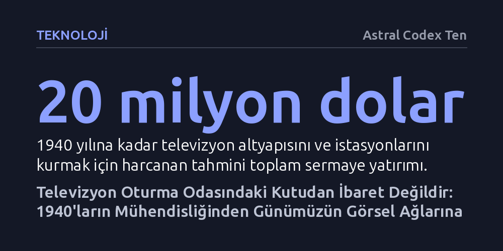

TEKNOLOJI · Astral Codex Ten · 2026-10-10
1940 tarihli öncü kayıtlar, televizyonun oturma odasındaki kutuya indirgenmiş ticari bir mecradan çok daha kapsamlı bir teknolojik sıçrama olduğunu kanıtlıyor. Erken dönem mühendislerinin geliştirdiği anlık ve mobil aktarım vizyonu, günümüzün her yeri saran görsel ekran ağlarının temelini atmıştır.
Televizyonu 1950'lerin ev içi tüketim aygıtı sanma yanılgısını yıkarak, bu buluşun aslında insan algısını fiziksel sınırlardan koparan ve bugünkü dijital ekran egemenliğine zemin hazırlayan köklü bir ağ felsefesi olduğunu gösterir.

Popüler kültürde televizyon tarihinin genellikle 1950'lerde, oturma odalarına giren ilk siyah beyaz dizilerle başladığı varsayılır. Oysa bu genel kabul, teknolojinin asıl doğum sancılarını ve ilk biçimlenişini gözden kaçırır. 1940 yılında yayımlanan ve dönemin yayıncıları, mühendisleri ile yöneticilerinin makalelerini bir araya getiren "We Present Television" başlıklı derleme, televizyonun henüz lüks ve deneysel bir meraktan ibaret olduğu günleri bütün çıplaklığıyla belgeler. O dönemde New York'taki Empire State Binası'nın zirvesine yerleştirilen NBC vericisi, gökyüzünü elektromanyetik dalgalarla yararak şehre ilk canlı yayın sinyallerini fırlatıyordu.
Bu erken dönem yayıncılığı günümüz televizyonundan ayıran en temel fark, neredeyse hiçbir görsel kaydın bugüne ulaşamamış olmasıdır. Sinemanın sessiz dönemine ait yanıcı peliküller gibi, 1930'ların sonundaki bu yayınlar da manyetik bant ya da film kaydı olmadan, tamamen anlık ve canlı icra ediliyordu. Ekranda beliren görüntüler o saniye içinde kaybolup gidiyor, arkasında yalnızca teknik notlar ve tanıklıklar bırakıyordu. Dolayısıyla televizyonun ilk on yılı, kültürel hafızamızda yer etmekten ziyade, teknolojinin henüz sınırlarını aradığı bir laboratuvar safhası olarak tarihe gömüldü.
Televizyonun pratik bir yayın aracına dönüşmesi, sanılanın aksine tek bir mucidin atölyesinden çıkmadı; milyonlarca dolarlık devasa sermaye yatırımı ve kurumsal koordinasyon sayesinde gerçekleşti. Erken dönem mekanik televizyon girişimleri, dönen diskler ve kayışlarla yetersiz kalmıştı. Bu kısıtlamayı aşan asıl kırılma, tüm mekanik parçaların terk edilip görüntünün saf elektromanyetik kuvvetlerle idare edildiği tamamen elektronik sistemlere geçilmesiyle yaşandı.
Sistemin merkezinde "ikonoskop" adı verilen kamera tüpü ile evlerdeki katot ışınlı alıcı tüp bulunuyordu. İkonoskopun içinde, ışığa duyarlı milyonlarca mikroskobik gümüş yuvadan oluşan bir mozaik plaka yer alıyordu. Mercekten gelen ışık bu plakaya düştüğünde her nokta elektrik yüküyle doluyor, ardından harici manyetik bobinlerle yönlendirilen incecik bir elektron demeti saniyenin otuzda birinde bu yüzeyi satır satır tarıyordu. Evdeki alıcıda ise benzer bir elektron tabancası, havadan gelen radyo sinyaliyle modüle edilerek floresan ekran üzerindeki çinko ve silikon noktalarını 441 yatay satır boyunca aydınlatıyordu. Böylece saniyede yüz binlerce ışık noktası gözün algılayabileceği bir hareket yanılsamasına dönüştürülüyordu.
Teknik standartların belirlenmesinin ardından yayıncıların karşılaştığı asıl muamma, ekranın neyle doldurulacağıydı. Başlangıçta Hollywood sineması televizyonu küçük bir rakip olarak görüp yüksek bütçeli filmlerini esirgediği için stüdyolar kendi formatlarını üretmek zorunda kaldı. Tiyatronun canlılığı, radyonun uzaktan erişimi ve sinemanın görsel dilini harmanlayan bu yeni mecra; yemek tarifleri, kukla gösterileri, heceleme yarışmaları ve kısa pembe diziler gibi bugün bile aşina olduğumuz ilk türleri ortaya çıkardı. Ancak erken dönemin imkânları son derece kısıtlıydı; genellikle üç kamerayla kurulan basit canlı stüdyo düzeni yönetmenlerin dinamik bir anlatı kurmasını zorlaştırıyordu.
Bu dönemin belki de en devrimci hamlesi, stüdyonun dört duvar arasından çıkarılıp sokağa taşınması oldu. 1937 yılında RCA tarafından iki dev otobüse sığdırılan ilk mobil yayın ünitesi, televizyonun doğasını tümüyle değiştirdi. Tonlarca ağırlıktaki bu mobil istasyon sayesinde Madison Square Garden'daki spor müsabakaları, 1939 Dünya Fuarı ve dönemin geçit törenleri anında evlere taşındı. Mobil üniteler televizyonun sadece kurgulanmış bir tiyatro sahnesi değil, dış dünyadaki gerçekliğin aracısız bir penceresi olduğunu kanıtladı; bugünkü canlı haber yayıncılığının ve spor endüstrisinin temeli bu hantal otobüslerle atıldı.
1940'ın öncüleri yalnızca teknik kılavuzlar yazmakla kalmamış, bu yeni mecranın geleceğine dair çarpıcı öngörülerde de bulunmuşlardı. Renkli yayının gelişi, yüksek kaliteli ses sistemleri, televizyon münazaralarının seçim sonuçlarını belirleyeceği ve reklam modellerinin yaygınlaşacağı gibi tahminler on yıllar içinde birebir gerçekleşti. Ancak kitabın yazarlarının ortaya koyduğu en derin kavrayış, televizyonun aslında ahşap bir mobilyaya gömülü ekrandan ibaret olmadığı tespitiydi.
Oturma odasındaki televizyon kutusu ve sınırlı yayın istasyonları, dönemin teknolojik yetersizliklerinin dayattığı geçici prangalardan ibaretti. Erken dönem felsefesine göre televizyon; insanın gözlerini ve kulaklarını kafatasının zamansal ve mekânsal sınırlarından kurtaran evrensel bir ağın ilk adımıydı. Bugün ceplerimizde taşıdığımız canlı yayın yapabilen akıllı telefonlar, sürekli akan kısa videolar ve her an her yerde birbirine bağlanan görsel ağlar, aslında seksen yıl önce New York gökdeleninin tepesinden fırlatılan o ilk kıvılcımın nihai durağıdır.